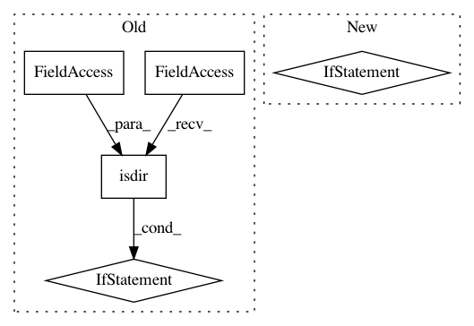

4bfebd857d9b94dff98e88c8cc59880f8fa54ec7,torchaudio/datasets/vctk.py,VCTK,__init__,#VCTK#,67
Before Change
self._path = os.path.join(root, folder_in_archive)
if download:
if not os.path.isdir(self._path):
if not os.path.isfile(archive):
checksum = _CHECKSUMS.get(url, None)
download_url(url, root, hash_value=checksum, hash_type="md5")
extract_archive(archive)
if not os.path.isdir(self._path):
raise RuntimeError(
"Dataset not found. Please use `download=True` to download it."
)
After Change
archive = os.path.join(root, archive)
self._path = os.path.join(root, folder_in_archive)
if download:
raise RuntimeError(
"This Dataset is no longer available. "
"Please use `VCTK_092` class to download the latest version."
)
if not os.path.isdir(self._path):
raise RuntimeError(
"Dataset not found. Please use `VCTK_092` class "
"with `download=True` to donwload the latest version."
In pattern: SUPERPATTERN
Frequency: 3
Non-data size: 5
Instances
Project Name: pytorch/audio
Commit Name: 4bfebd857d9b94dff98e88c8cc59880f8fa54ec7
Time: 2020-08-19
Author: abhi.dubey011999@gmail.com
File Name: torchaudio/datasets/vctk.py
Class Name: VCTK
Method Name: __init__
Project Name: sony/nnabla
Commit Name: a7a44e0304e9c704d937c7ff71992138e95789f0
Time: 2021-02-10
Author: Yuchi.Wen@sony.com
File Name: python/src/nnabla/utils/cli/convert.py
Class Name:
Method Name: resolve_file_format
Project Name: PavlosMelissinos/enet-keras
Commit Name: 28e7817f3ec42a59054a772f80a5782812a02448
Time: 2019-12-17
Author: PavlosMelissinos@users.noreply.github.com
File Name: src/data/utils.py
Class Name:
Method Name: ensure_dir